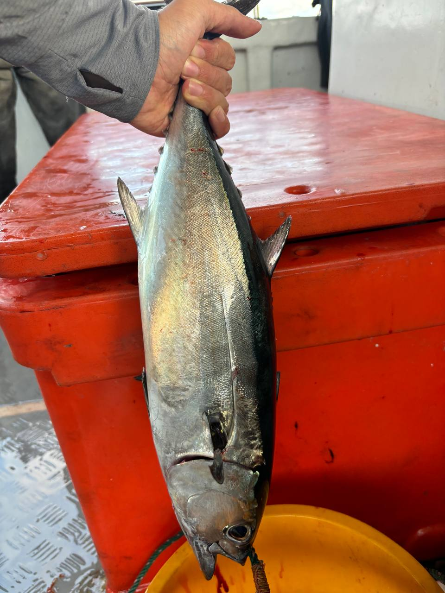

Tuna King

Summary
I swim hard against the current and even harder when there are sharks.
Education
Work Experience
Associate School Navigator - South China Sea Tuna Fleet
June 2022 - October 2024
- Led annual mass migration of south china sea tuna to bait schools.
- Avoided trawling nets and saved approximately 10000 ocean folk by cooperating with dolphins and turtles.
- Promoted safety culture to young tuna schools across the tuna fleet with lectures on frenzy safety and fishing activity identification.
Junior School Navigator - Pacific Ocean Tuna School
June 2020 - May 2022
- Assisted navigation of 500 tuna in the pacific ocean school for two seasons.
- Safeguarded tuna school from more than 500 fishing activities by identifying common jig types.
- Maintained order by counselling school members after fishing incidents.
Skills
- Inter-species Communication
- Dolphin Speak
- Turtle Speak
- Intra-species Communication (Dialects)
- Pacific Longfin Tuna Speak
- Pacific Bluefin Tuna Speak
- Pacific Yellowfin Tuna Speak
- Fishing Activity Identification
- Jigging Setup
- Bottom Setup
- Trawling Net Setup
- Trolling Lure Setup
Awards & Certifications
- Pacific Ocean Safety Ambassador - Pacific Ocean Tuna School (June 2021 - June 2022)
- Nomad Designs Fishing Tackle Identification Expert (June 2023)